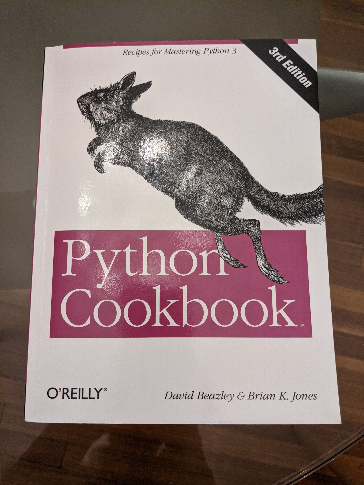

Table of Contents
1 はじめに
Python修行のために中級向けのPython本3冊を4ヶ月かけて立て続けに読みました。 Python Cookbook 3rd Editionはその3冊目になります。 これまで以下の本を読んできましたが、初心者向けではなかった最初の一冊を除いて、なかなか良いセレクションと順番だったと思います。
- Introducing Python
- Python Crash Course
- Effective Python
- Fluent Python
- Python Cookbook
2 Python Cookbook
Python Cookbook 3rd Edition, David Beazley, Brian K. Jones 野ウサギが表紙のO'Reilly本です。

2.1 内容
Pythonicなコードで書かれたレシピ集です。リファレンス本として推薦されていることも多いですが、解説が優秀で学習本としても役に立ちます。私はcover-to-coverで読みました。最後のC extensionsの章は飛ばしても良かった気もしますが、今後役に立つ時が来るかもしれません。
載っているコードは、レシピとして使うにはやや清廉され過ぎていている気もします。Pythonicなコードに慣れるという意味ではよいのですが、レシピとして使い回す以前に腰を落ち着けて書いてある内容を理解する必要がありそうです。そういう意味で、この本はいったん全て読んでから、リファレンス的なレシピ集として活用するのが良いように思います。
2.2 難易度
Intermediate(中級)向けの本として紹介されていることもありますが、この本は本当に難しいです。Effective Python → Fluent Python → Python Cookbookの順で読むと良い、とどこかに書いてあったのでその通りにしましたが、正解でした。特にFluent Pythonを読んで知識の底上げをしていなかったら、最初の100ページで挫折していたと思います。
レシピによってだいぶ難易度に差があります。中でも、スレッドの代わりにジェネレーターを使ってコンカレンシーを実現するレシピ(12.12)は、一週間ほど悩み、ノートに流れを整理してやっと理解できました。何度も挫折しそうになりつつ、2ヶ月かけてようやくcover-to-coverで読み終えることができました。
2.3 感想
レシピ集ということで、実際に使用可能なコードを読み込んで実力を付けたい、と思ってあえてcover-to-coverで読みましたが、サンプルコードが高度すぎて読むのに手間取ったこともあり、運用能力はあまり上がった気がしません。今回はサンプルコードを実際に動かさなかったこともあるかもしれません。
一方で、一通り読んだ割にはどんなレシピがあったかあまり覚えておらず、このままでは本来のレシピ集として活用できる気もしません。。。。というわけで、Appendixとしてレシピ一覧を自分用に作っておこうと思います。
3 久々のアップデート
またもや3ヶ月ぶりのアップデートです。この記事は12月に書いていたのですが、Python やブログ開発環境が壊れていて、更に1ヶ月ほど放置してしまいました。その間にSQLの勉強をしていたので、こちらも後で記事にしたいと思います。